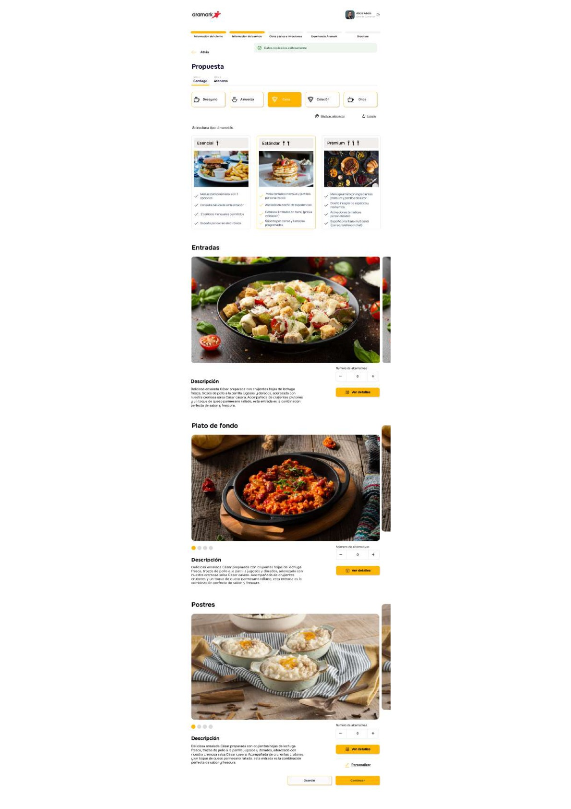
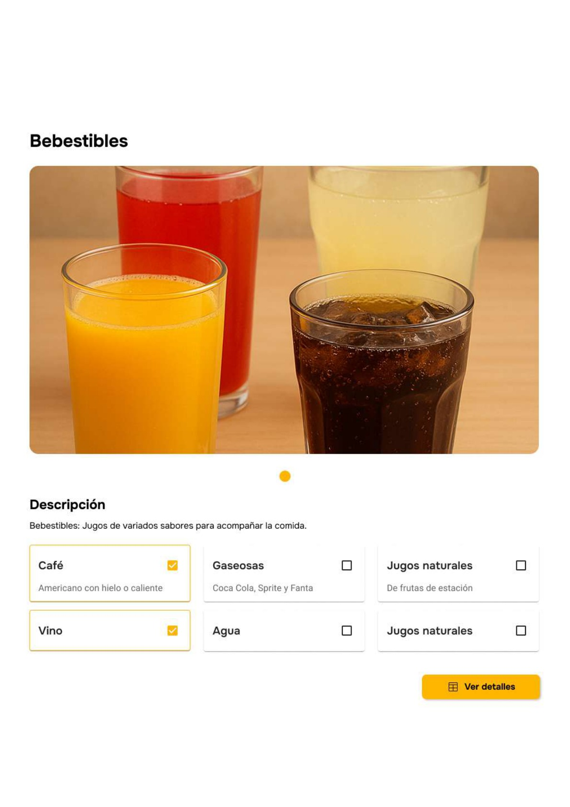

Aramark es una compañía multinacional de servicios de alimentación y facility management. Sus equipos de ventas son responsables de construir propuestas comerciales para clientes corporativos — propuestas que antes dependían de procesos manuales, hojas de cálculo y criterios dispares según el vendedor.
Aramark is a multinational food services and facility management company. Its sales teams are responsible for building commercial proposals for corporate clients — proposals that previously relied on manual processes, spreadsheets, and criteria that varied from rep to rep.
La Quoting Tool nació para resolver ese problema: una aplicación web interna que permite a los vendedores generar propuestas de servicio de alimentación de manera estructurada, transparente y consistente. Seleccionan tiers de servicio, configuran secciones de menú con precios unitarios y cantidades, y obtienen una cotización lista para presentar al cliente.
The Quoting Tool was built to solve that problem: an internal web application that allows sales reps to generate food service proposals in a structured, transparent, and consistent way. They select service tiers, configure menu sections with unit prices and quantities, and get a quote ready to present to the client.
La Fase 1 de la herramienta fue diseñada, desarrollada y lanzada exitosamente en Chile. Con la plataforma en producción y validada en el mercado chileno, surgió la siguiente pregunta natural: ¿cómo llevarla a Argentina?
Phase 1 of the tool was designed, developed, and successfully launched in Chile. With the platform live and validated in the Chilean market, the natural next question emerged: how to bring it to Argentina?
La Quoting Tool fue diseñada, construida y lanzada en el mercado chileno. Funcionando en producción, sentó las bases tecnológicas y de diseño para la expansión regional.
The Quoting Tool was designed, built, and launched in the Chilean market. Running in production, it laid the technological and design foundations for regional expansion.
Segunda etapa centrada en adaptar la plataforma a las reglas de negocio, precios y normativas locales del mercado argentino, sin interrumpir las operaciones ya consolidadas en Chile.
Second phase focused on adapting the platform to Argentine market business rules, pricing structures, and local regulations — without disrupting operations already consolidated in Chile.
Expandir una herramienta digital a otro país parece una operación de copy-paste, pero rara vez lo es. Argentina tiene sus propias normativas, estructuras de precios y lógicas de negocio que no coinciden con las de Chile. Adaptar la plataforma sin romper lo que ya funcionaba requería entender dónde estaban esas diferencias y cómo traducirlas en cambios concretos de interfaz y flujo.
Expanding a digital tool to another country looks like a copy-paste operation, but it rarely is. Argentina has its own regulations, pricing structures, and business logic that don't map directly to Chile's. Adapting the platform without breaking what already worked required understanding where those differences lived and how to translate them into concrete interface and flow changes.
Al mismo tiempo, la Quoting Tool tenía usuarios reales en producción en Chile. Cualquier cambio en la arquitectura compartida de la plataforma debía garantizar que esas operaciones no se vieran afectadas. El reto no era solo de diseño: era de coordinación, precisión y criterio.
At the same time, the Quoting Tool had real users live in production in Chile. Any change to the platform's shared architecture had to guarantee those operations were not affected. The challenge was not only about design — it was about coordination, precision, and judgment.
La Quoting Tool guía al vendedor a través de un flujo estructurado para construir una propuesta de servicio de alimentación. El corazón de la experiencia es la pantalla de Propuesta: el vendedor elige entre tres tiers de servicio —Esencial, Estándar y Premium— y configura cada sección del menú (Entradas, Plato de fondo, Postres, Bebestibles) seleccionando ítems con su foto, precio unitario y cantidad.
The Quoting Tool guides the sales rep through a structured flow to build a food service proposal. The heart of the experience is the Proposal screen: the rep chooses between three service tiers —Esencial, Estándar, and Premium— and configures each menu section (Starters, Main Course, Desserts, Beverages) by selecting items with their photo, unit price, and quantity.
El resultado es una cotización completa, consistente y lista para el cliente.
The result is a complete, consistent quote ready for the client.
Esencial, Estándar y Premium permiten al vendedor ofrecer opciones diferenciadas según el tipo y complejidad de la cuenta. La propuesta se organiza alrededor de este eje.
Esencial, Estándar, and Premium allow the sales rep to offer differentiated options based on the type and complexity of the account. The proposal is organized around this axis.
Cada ítem incluye fotografía del producto, nombre, precio unitario y campo de cantidad. El diseño en tarjetas facilita la lectura, la comparación y la selección rápida.
Each item includes product photography, name, unit price, and quantity field. The card layout makes reading, comparing, and selecting fast and clear.
Entradas, Plato de fondo, Postres, Bebestibles — cada sección tiene su propio flujo de selección. La estructura mantiene el orden y la claridad a lo largo de toda la cotización.
Starters, Main Course, Desserts, Beverages — each section has its own selection flow. The structure keeps the quote ordered and clear from start to finish.
Participé como UX/UI Designer dentro del equipo core POD Digital de Baufest, integrada en la dinámica del proyecto desde el inicio de los sprints hasta la entrega final. El trabajo en proyectos de mantenimiento evolutivo tiene una particularidad: el diseño no parte de cero, sino que opera sobre una plataforma en producción con usuarios reales.
I participated as UX/UI Designer within Baufest's core POD Digital team, integrated into the project's dynamics from the first sprint through final delivery. Design work in evolutionary maintenance projects has a distinctive quality: it doesn't start from scratch — it operates on a production platform with real users already on it.
Eso define el foco: mantener la coherencia de la experiencia mientras se incorporan cambios funcionales, se adaptan flujos a las reglas del nuevo mercado y se toman decisiones de interfaz que deben ser técnicamente viables y consistentes con lo ya construido. El trabajo fue transversal y colaborativo — en constante diálogo con la BA/PO para entender los requerimientos de negocio, y con el desarrollador y el arquitecto para garantizar que las soluciones propuestas fueran implementables dentro del scope del proyecto.
That defines the focus: maintaining experience coherence while incorporating functional changes, adapting flows to the new market's rules, and making interface decisions that must be technically feasible and consistent with what was already built. The work was cross-functional and collaborative — in constant dialogue with the BA/PO to understand business requirements, and with the developer and architect to ensure proposed solutions were implementable within the project's scope.
Las decisiones de diseño se tomaban dentro del ritmo ágil del equipo: requerimientos, propuesta de solución, revisión y ajuste. Azure DevOps como eje de trazabilidad y seguimiento de tareas.
Design decisions were made within the team's agile rhythm: requirements, solution proposal, review, and adjustment. Azure DevOps as the axis for traceability and task tracking.
Integración constante con BA/PO, desarrollo y arquitectura. Cada decisión de interfaz se validaba contra los requerimientos de negocio, la factibilidad técnica y la coherencia con la plataforma existente.
Constant integration with BA/PO, development, and architecture. Each interface decision was validated against business requirements, technical feasibility, and consistency with the existing platform.
Algunas de las pantallas que diseñé para la herramienta. En la pantalla de Propuesta trabajé la estructura de tiers de servicio y las secciones de menú, e incorporé las acciones de Limpiar y Publicar: Limpiar permite descartar la configuración actual y empezar de nuevo, y Publicar deja la propuesta lista una vez que el vendedor la termina.
Some of the screens I designed for the tool. On the Proposal screen I worked on the service-tier structure and the menu sections, and added the Clear and Publish actions: Clear discards the current configuration to start over, and Publish leaves the proposal ready once the rep is done.

Pantalla de Propuesta — Tiers de servicio, acciones de Limpiar y Publicar, y sección de Entradas. Cada ítem muestra fotografía del producto, nombre, precio unitario y campo de cantidad.
Proposal screen — Service tiers, Clear and Publish actions, and Starters section. Each item displays product photography, name, unit price, and quantity field.
En la sección de Bebestibles diseñé el patrón de selección por opciones: el vendedor marca con checkbox las bebidas que quiere incluir (Café, Gaseosas, Jugos naturales, Vino, Agua) y esa selección se replica de forma consistente en los demás menús de la propuesta, manteniendo coherencia y evitando volver a configurar lo mismo en cada sección.
In the Beverages section I designed the option-selection pattern: the rep checks the drinks they want to include (Coffee, Soft drinks, Natural juices, Wine, Water) and that selection replicates consistently across the proposal's other menus, keeping coherence and avoiding having to configure the same thing in each section.

Sección Bebestibles — Selección por checkboxes (Café y Vino marcados). Las bebidas elegidas se replican en los demás menús de la cotización.
Beverages section — Checkbox selection (Coffee and Wine checked). The chosen drinks replicate across the quote's other menus.
En mayo de 2026, la segunda etapa fue entregada exitosamente. La Quoting Tool pasó a operar en dos mercados latinoamericanos: Chile, donde ya estaba consolidada, y Argentina, adaptada a sus propias reglas, precios y normativas locales. El equipo de Baufest lo comunicó oficialmente así:
In May 2026, the second phase was successfully delivered. The Quoting Tool now operates in two Latin American markets: Chile, where it was already consolidated, and Argentina, adapted to its own rules, pricing, and local regulations. The Baufest team made the official announcement:
"Con orgullo queremos compartir la entrega exitosa de la segunda etapa de la Quoting Tool junto a nuestro cliente Aramark. Este hito representa la expansión exitosa de la solución a un nuevo mercado, Argentina, adaptando la plataforma a las normativas y necesidades locales. Felicitamos a todo el equipo por su dedicación y excelente trabajo. ¡Sigamos construyendo juntos!"
— Baufest · Comunicación oficial de entrega de proyecto · Mayo 2026
Siguiente proyectoNext project
Cosmos — Portal & wizard de pagos →